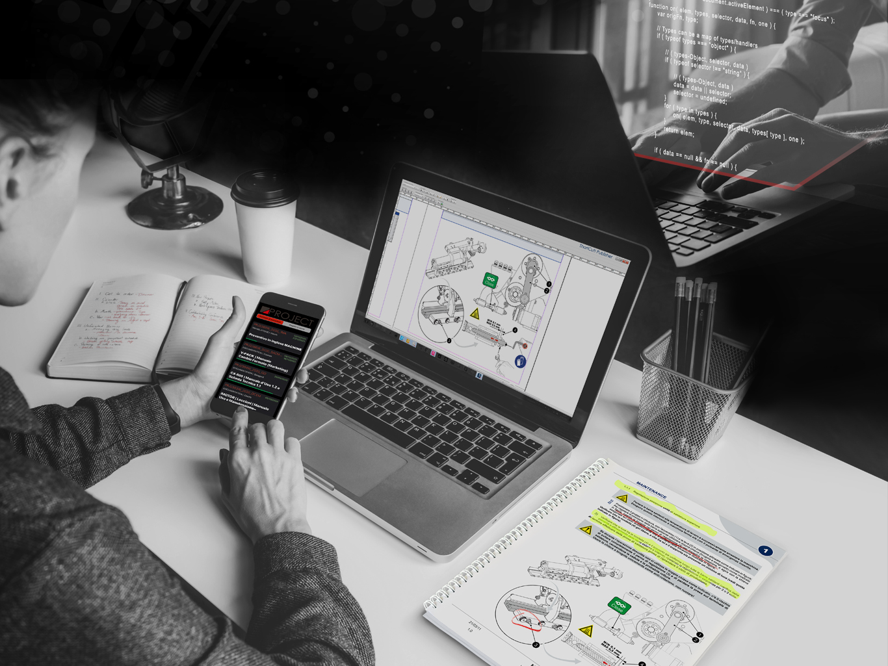

Dalla gestione della documentazione tecnica allo sviluppo di software gestionali customizzati per l'intera organizzazione aziendale. Sfruttiamo la nostra visione strategica e l'intelligenza artificiale per creare piattaforme su misura (es. HyperLab) compliant con le norme ISO 9001 e ISO/IEC 17025.

Ogni azienda manifatturiera e tecnologica possiede flussi di lavoro unici che i software commerciali "standard" spesso non riescono a soddisfare, costringendo i team a compromessi operativi o a un prolungato utilizzo di fogli di calcolo disconnessi.
DUE.ZERO progetta e sviluppa Soluzioni Software Custom e Piattaforme Gestionali 2.0, combinando competenze di analisi di processo, visione strategica industriali ed Intelligenza Artificiale. Il nostro obiettivo è guidare le aziende — dagli OEM di macchine automatiche fino alle strutture terziarie di servizio — verso una reale trasformazione digitale tailor-made.
La nostra esperienza nello sviluppo software nasce dalle esigenze reali dell'industria e si estende alla digitalizzazione di intere strutture operative, reparti produttivi e laboratori.
Un esempio emblematico della flessibilità e del know-how di DUE.ZERO è HyperLab, un software gestionale proprietario nato per governare la complessità di una struttura operante nel settore dei laboratori di prova e analisi:
L'architettura alla base di progetti come HyperLab dimostra la nostra capacità di modellare l'infrastruttura software su qualsiasi tipologia di business:
Nell'ambito specifico dell'automazione industriale, continuiamo a progettare e implementare architetture dedicate: